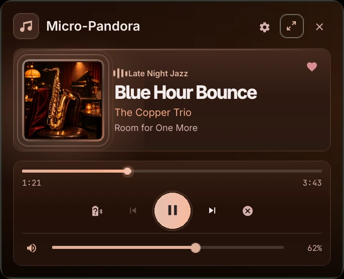
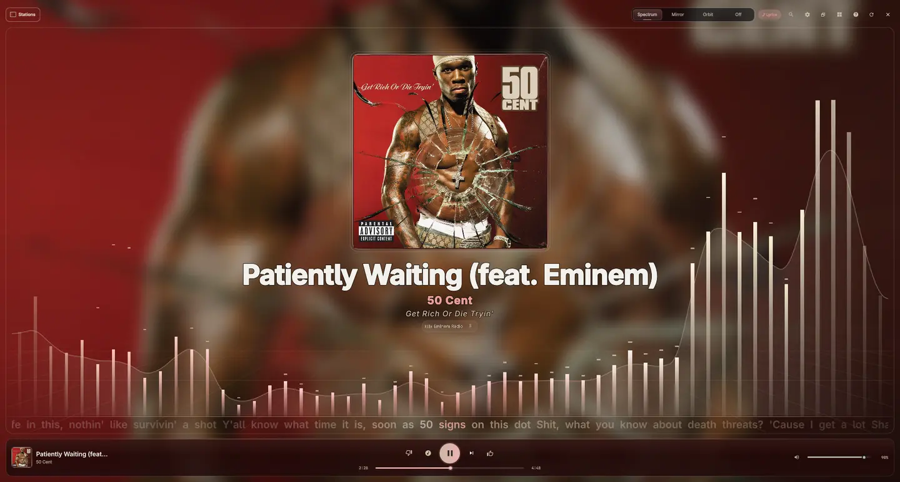
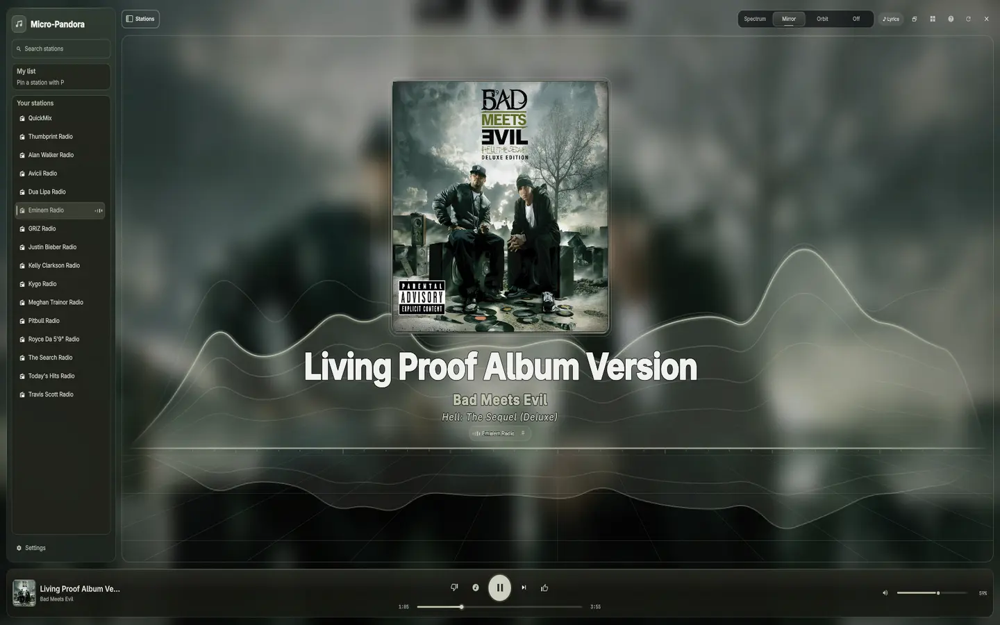
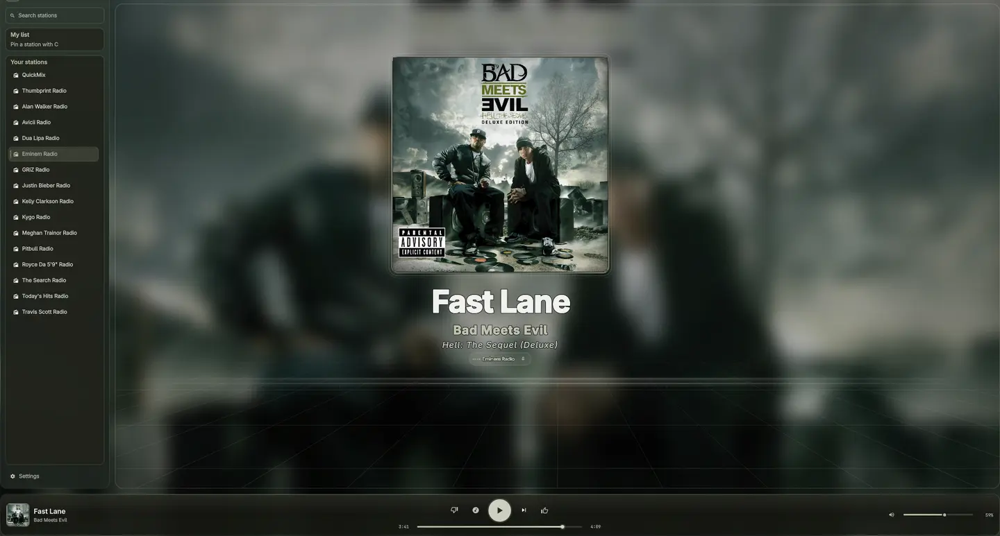

Pandora for Omarchy
Play your stations from the bar or open the full player for album-colored controls and live audio visualizers.
Players


Visualizer modes
Choose a mode in the full-player header or press V to cycle through them. Click a screenshot to open it at full size.







Screenshots show fictional tracks and stations with original demo artwork.